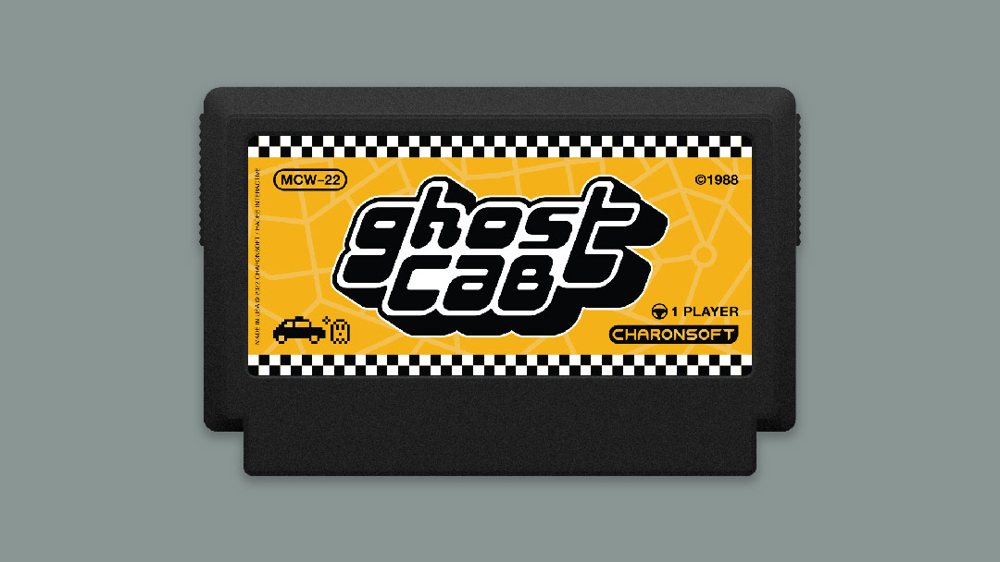
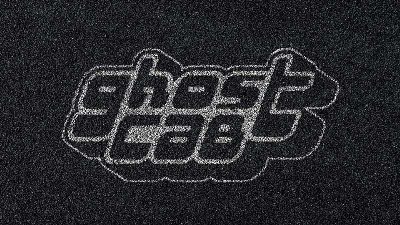
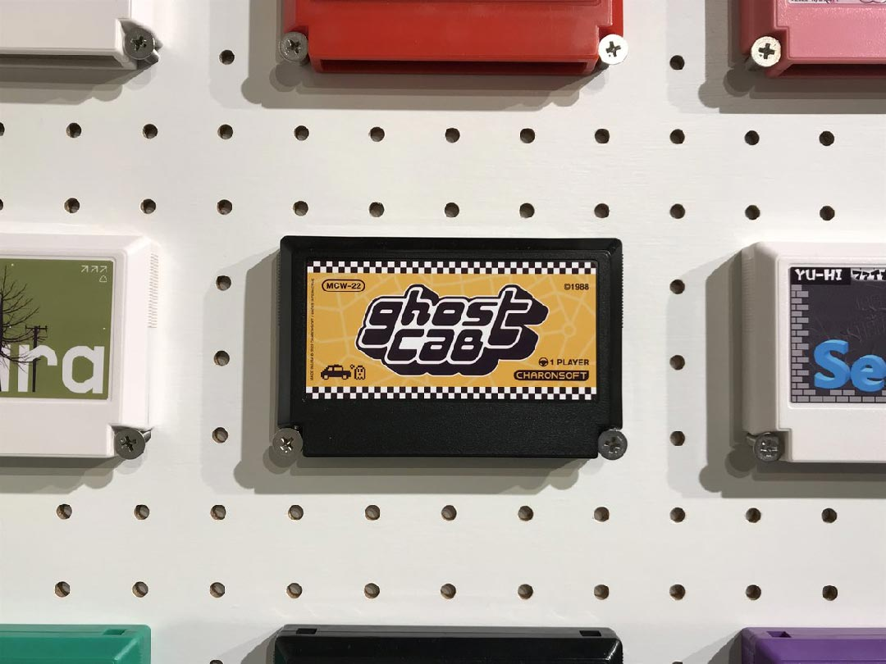
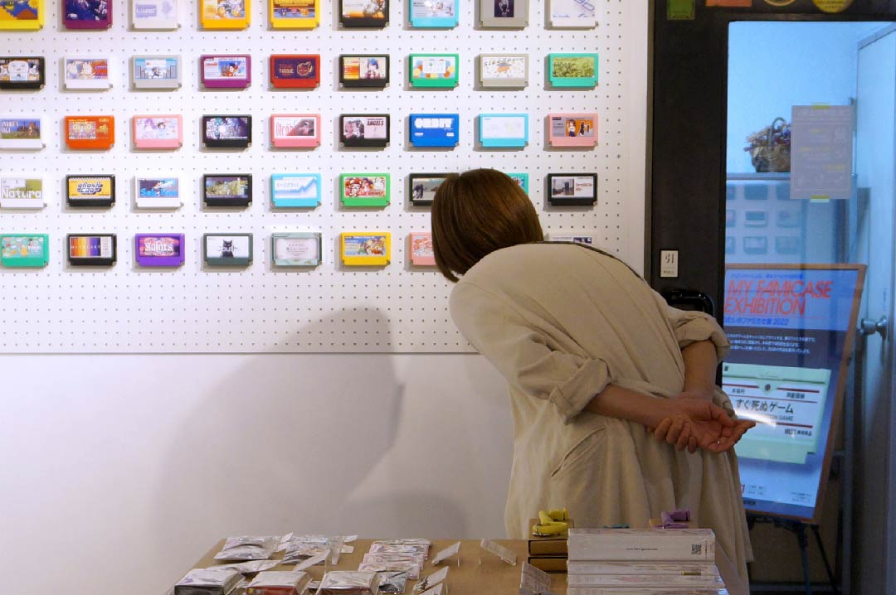

← Return to Homepage — Ghost Cab

Ghost Cab — Famicase 2022
I’m extremely excited to be participating in Famicase 2022! If you’re unfamiliar, Famicase is an annual exhibit in Tokyo that displays fan-made Famicom cartridges designed by people from all over the world. It’s an overlap of my two biggest interests: graphic design and retro video games. I’ve been following the exhibit for a long time and finally submitted a design this year:
GHOST CAB: Welcome to the Acheron City Cab Company! Your job is simple: drive each passenger to their final destination. It looks like you're our only driver today, so we may need you to do some overtime. Good luck and don't scratch the car!



Exhibit & Catalog
01. Famicase 2022 Exhibit ↗
02. Famicase Catalog (US) ↗
03. Famicase Catalog (JP) ↗
Social Media Links
01. METEOR Tweet ↗
02. My Twitter Thread ↗
03. Famicase on Instagram ↗
04. Capsule Corner × Famicase ↗
Ghost Cab × AGBIC
01. Soundtrack by Bibiki García ↗
02. Ghost Cab by DevLongo ↗
03. Ghost Cab by NightPxel ↗
Latest News
Ghost Cab now has a soundtrack and multiple games, thanks to the A Game By its Cover jam! Visit the direct links above or check out the 2022 AGBIC jam ↗.
Credits
The two photos from the exhibit were taken from the @club_meteor ↗ Twitter account.